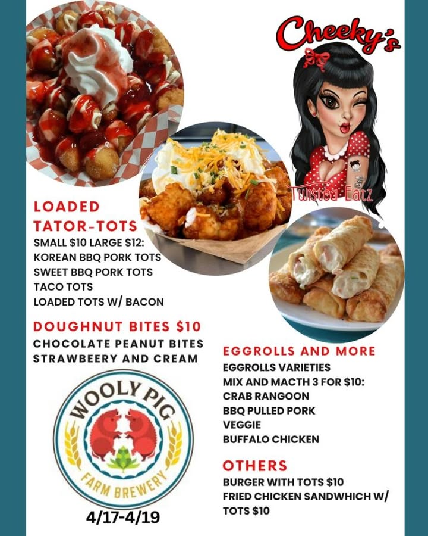
Load up on tots, eggrolls and doughnut bites this weekend with Cheeky's Twisted Eatz! April 17-19! #gimmeyourtotsnapoleon Visit Coshocton, Ohio! @visitcoshocton
Posts from our Facebook page

Load up on tots, eggrolls and doughnut bites this weekend with Cheeky's Twisted Eatz! April 17-19! #gimmeyourtotsnapoleon Visit Coshocton, Ohio! @visitcoshocton
Are you looking for something new and fun to do this spring? Check out the Sip N' Stay tour with Cork & Tap Excursions!
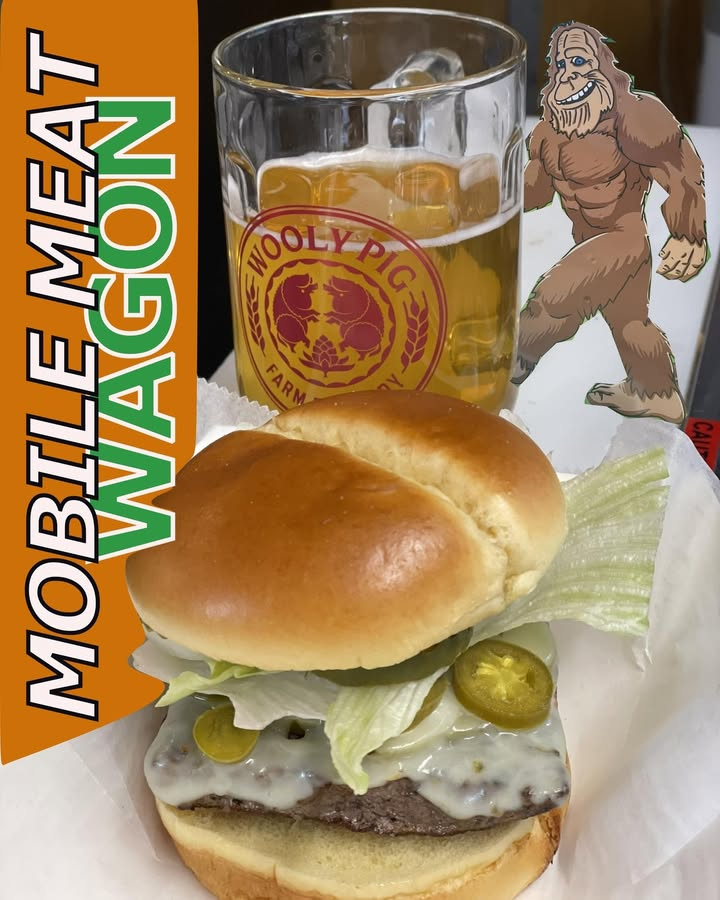
The mobile meat wagon will be here starting Friday evening around 4pm!
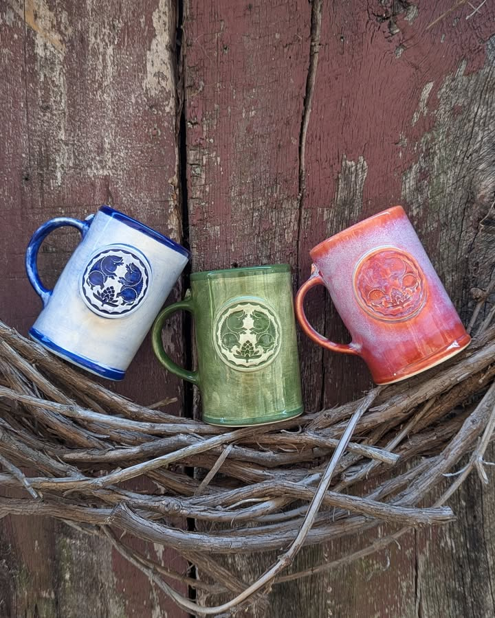
We got a limited order of these gorgeous handcrafted Wooly Pig mugs from Crow House Pottery last night! First come, first served--get 'em while they last! Visit Coshocton, Ohio! Shop Coshocton @visitcoshocton @shopcoshocton @crowhousepottery
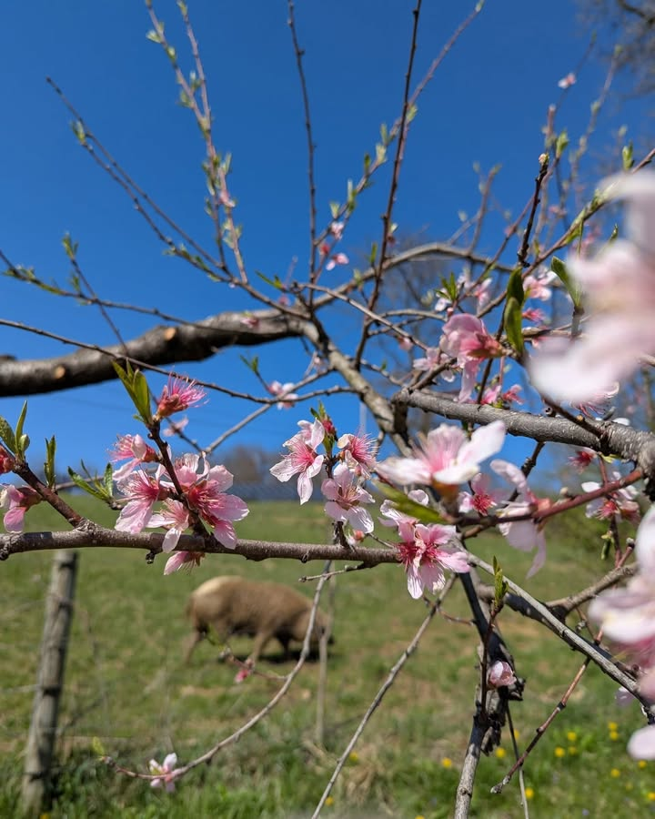
The frost last night didn't get ALL the peach blossoms, so we may still have a chance of a Peach Honey Bock or Peach Cream Ale in the fall! In the meantime, come for a beer and trivia and enjoy a perfect Spring day! #drinklocal #itsabeautifulday Visit Coshocton, Ohio! @visitcoshocton
If you're on the hunt for Big Foot, come down this weekend to brewery! The mobile meat wagon will be here, and the big guy LOVES burgers and beer. You won't be disappointed! #hegetstheliter Visit Coshocton, Ohio! @visitcoshocton @themobilemeatwagon
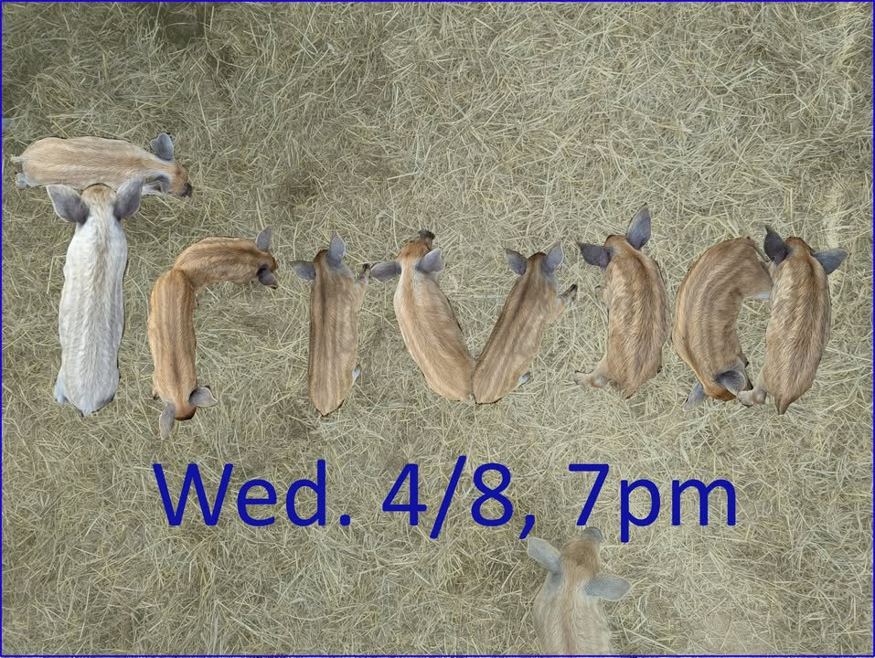
Alright you party animals! It's time for all your training to pay off! That's right: Wooly Pig Trivia is Wed., 4/8/26 at 7pm. Compete for treats or just for the glory! #itsapigslife #pigfont #finally #infinitepiglets #infinitetypewriters #bestnamewins Visit Coshocton, Ohio! @visitcoshocton
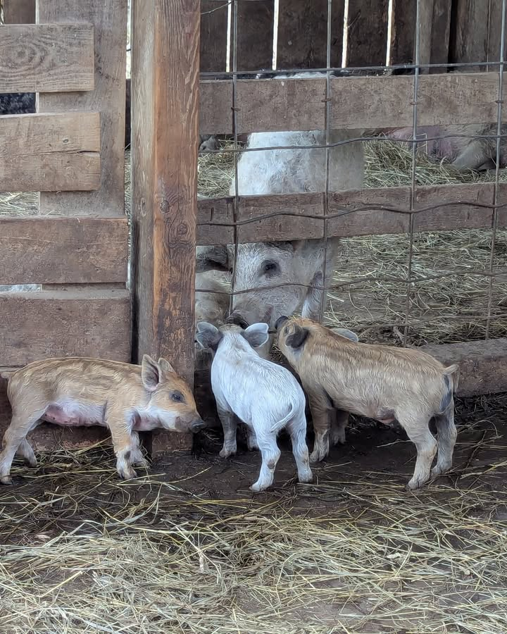
It's a good day to get reacquainted with your friends and neighbors! Come on down to our sty and hang out a bit! #youscratchmyback #itsapigslife Visit Coshocton, Ohio! @visitcoshocton
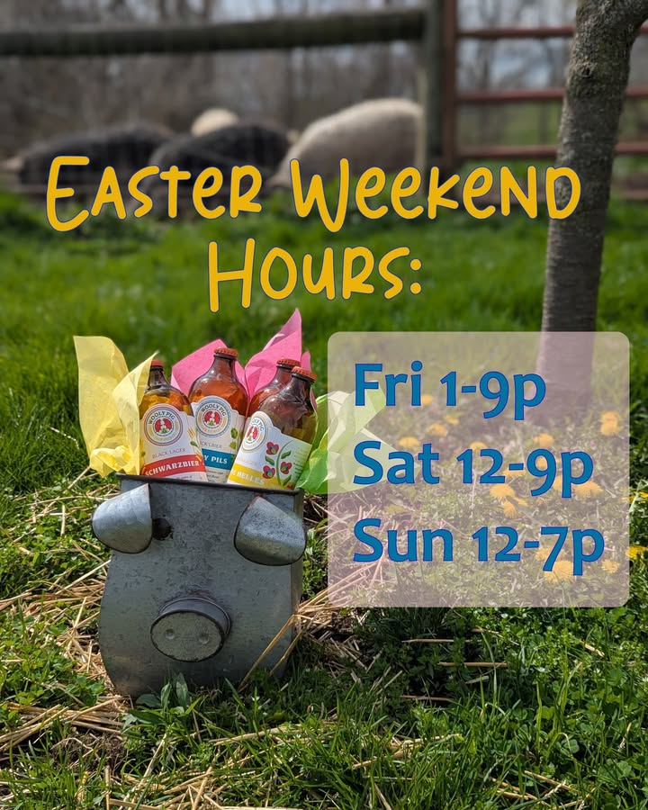
Easter weekend is early this year! We will be open our normal hours--plenty of opportunities for that generous Bunny to collect all the right treats for the Easter basket! #adulteasterbasket #easterpigs #pigswithbunnyears Visit Coshocton, Ohio! @visitcoshocton
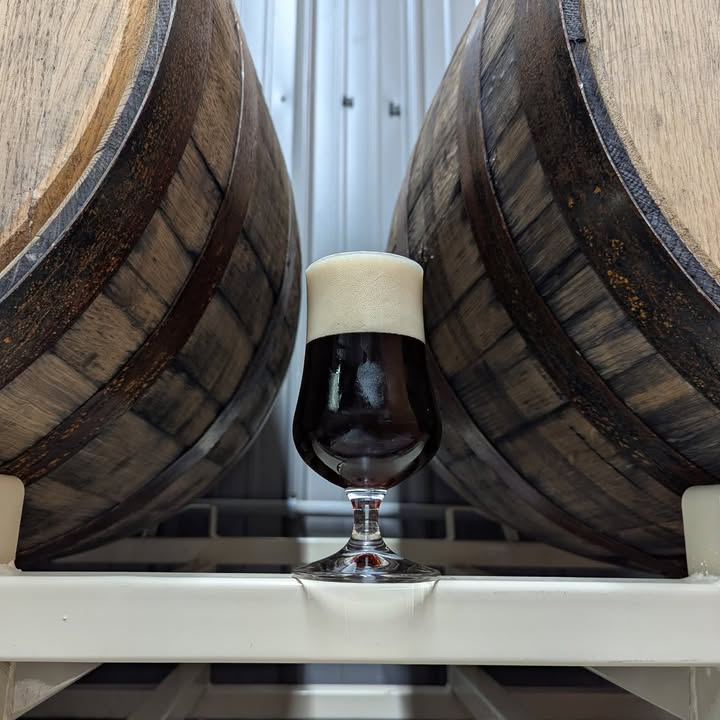
We're tapping another new experiment in the barrel-aging project: What happens to a session beer aged in a rye whiskey barrel? Whiskey notes spice up and sweeten our Rye Dunkel without overwhelming the clean drinkability of the base beer. On tap today! #barrelagedbeer #ryebeers #ryewhiskey #ryeonryeonryeonrye Visit Coshocton, Ohio! @visitcoshocton Ohio Craft Beer @ohiocraftbeer Northeast Ohio Craft Beverage News @neo_craft_brewery_news
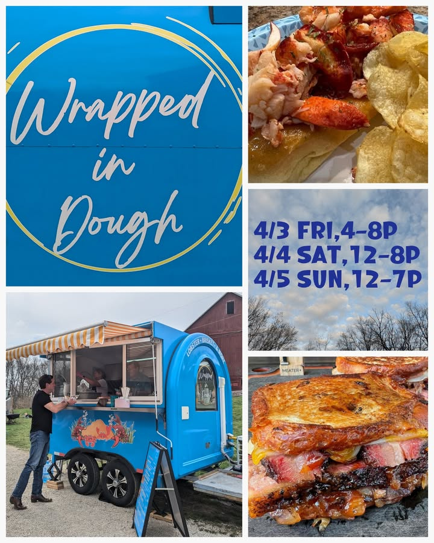
Edit: fixed the dates! Ohhhh, boy! The world's cutest foodtruck will be here this weekend! Wrapped in Dough will be sailing in with their delicious and generous lobstah' rolls and always something turf-y for the landlubbers among us. Friday, 4-8pm; Sat. 12-8pm and Sun 12-7pm. #cutestfoodtruckever #oceanblue #yellowsubmarine #butnotyellow @Visit Coshocton, Ohio! @visitcoshocton
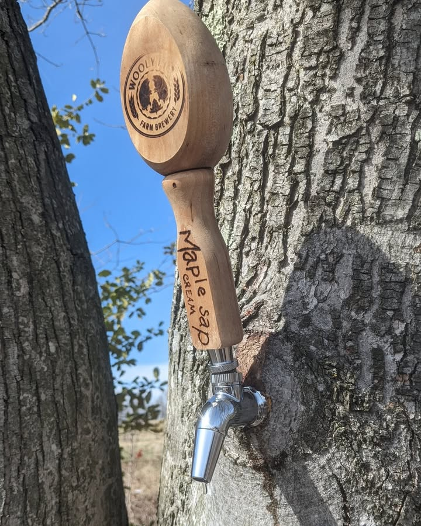
It was a long winter, so our fave spring beer is a little late this year! The Maple Sap Cream Ale is made with 500 gal. of Fresno maple sap--right out of the tree--resulting in a light & crisp, locally-sourced beer, with hints of honey and freshly plowed earth. Tapped today! #springishere #notmaplesyrup #realgreenbeer #treeblood #noai Visit Coshocton, Ohio! Ohio Craft Beer Northeast Ohio Craft Beverage News @visitcoshocton @ohiocraftbeer @neo_craft_brewery_news
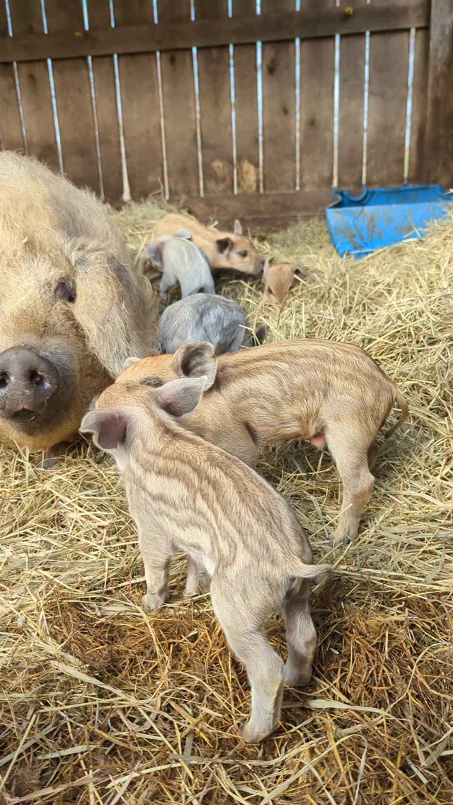
There's nothing I can do to improve this video! Introducing the most recent litter of wooly piglets --9 little sausages may be our biggest family yet! volume on to hear the sneezes... #1dayold #horseplay #pigplay #noai
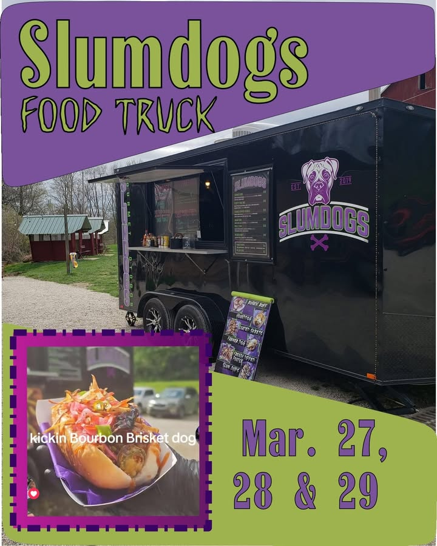
We've got Auggie-dog and Ushi-dog, and now we've got Slumdogs food truck this weekend--with the best hot dogs of the year! This weekend, Mar. 27-29. #whosagooddog #brewerydogs Visit Coshocton, Ohio! @visitcoshocton

After 75,428 half-liter pours, the original Rustic Helles tap handle may have finally bit the dust. It's been a great 8 years, but there's only so much pulling it could "handle". #welldonethougoodandfaithfulservant #beer #beerjokes
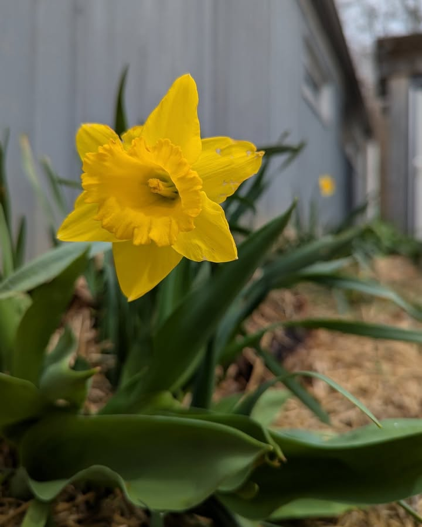
It's the first day of Spring, and the daffy-down-dillies are popping up around the place. Must be about time for outside beers... Visit Coshocton, Ohio! @visitcoshocton

Welcome back the Baltic Porter! No special add-ins, just rich, roasty, caramelized flavors and a clean finish. #namedafterBaltic #notthatBaltic Visit Coshocton, Ohio! @visitcoshocton Ohio Craft Beer @ohiocraftbeer

Yum, yum yum! Grandmom Minnie's Munchies LLC. will be here this weekend with a whole pile of delicious menu items. It's the peach cobbler for me....Friday, 3/20-Sunday, 3/22! Visit Coshocton, Ohio! @visitcoshocton

If you're looking for something light and refreshing, something that the sun can shine right through, come try the Kleines Keller. Kleines means small and at 3.5% ABV, this delicate pilsner is small in kick, but satisfying in flavor! #whatswrongwiththisphoto #noAI #seerightthroughyou Visit Coshocton, Ohio! Ohio Craft Beer Northeast Ohio Craft Beverage News @visitcoshocton @ohiocraftbeer @neo_craft_brewery_news
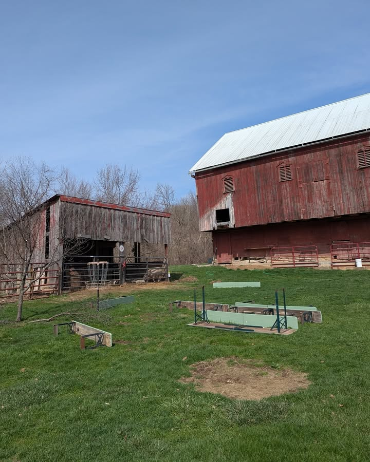
Casualties of the wind last night--but we really can't complain! The brewery's got power and BEER, and Emily at Real McCoy BBQ has all sorts of delicious dishes for those who can't (or don't want to) cook at home. #sunsout #powersout #windblown Visit Coshocton, Ohio! @visitcoshocton
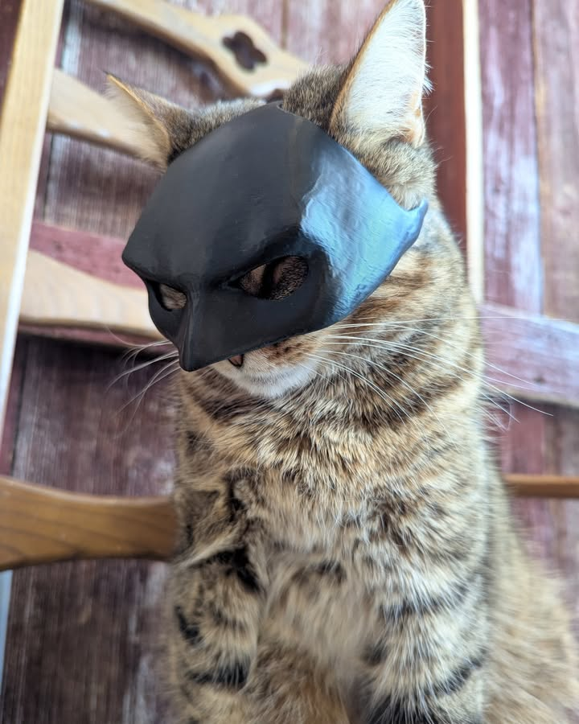
Holy Foaming Beer Mug, Catman! #Bam! #Kapow! #Whack! #brewerycats #strongandsilenttype @distillerycats @Visit Coshocton, Ohio! @visitcoshocton
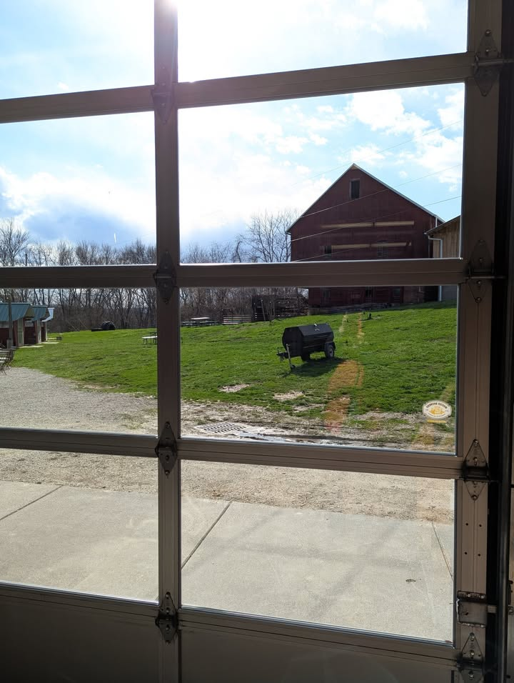
Oh, boy, the smokers are popping up in the yard. Spring must be around the corner... Real McCoy BBQ

Possible pairing for the Coconut Baltic Porter: -Dark Chocolate Cake -Rum cake -Cheesecake -Angel foodcake -Pineapple upsidedown cake -basically, any cake. -Sharp cheddar Pick up a bottle to make a treat out of anything (but especially cake). Visit Coshocton, Ohio! @visitcoshocton
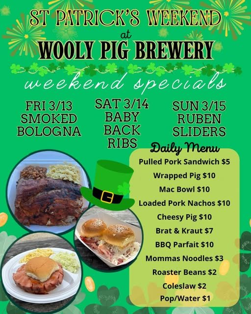
We're drooling green today in anticipation of Real McCoy BBQ at the Wooly Pig for this early St. Paddy's weekend! Fri., 3/13- Sun., 3/15! #wrappedpig #cheesypig #woolypig Visit Coshocton, Ohio! @visitcoshocton Cork & Tap Excursions @corkandtapohio
Have you climbed every mountain? Can you translate Grand Teton? Do you know who Grandma Gatewood is? If so, its time to show up at trivia and go for the glory. Wed, 3/11, 7pm. #becauseitsthere #bestnamewins #notthesoundofmusic #nonetheweisse @visitcoshocton Visit Coshocton, Ohio!

Getting our coals ready for the Doppelbock bierstacheln. Visit Coshocton, Ohio! @visitcoshocton
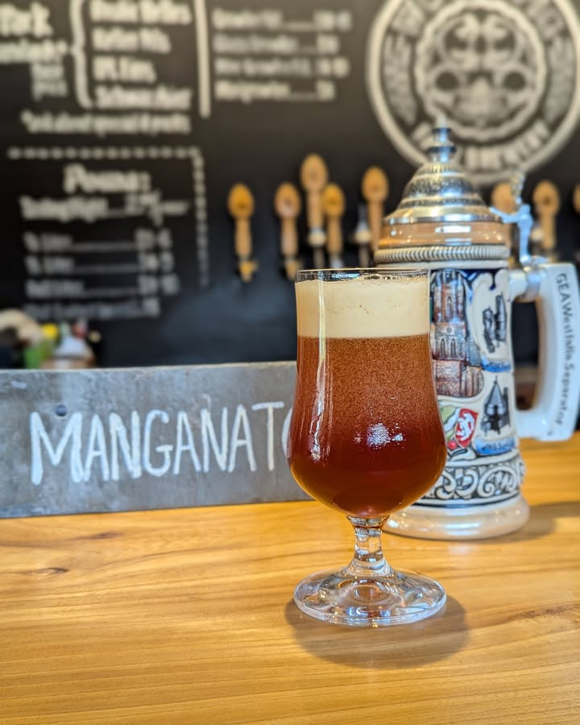
Imagine you're a monk in the 1700's and you are fasting for the 40 days of Lent. No food!--but you are allowed to drink.... Enter the Doppelbock. Our doppelbock is called the Manganator; as a double of our dunkel, it's a meal in a glass. On tap today! Hot beer poker on Sunday! #dontfastthough #drinkitforlent #drinkwatertooplease Visit Coshocton, Ohio! @visitcoshocton Ohio Craft Beer Northeast Ohio Craft Beverage News

Throwback Thursday! Doppelbocks are traditionally associated with goats, and since we're tapping our doppelbock (the Manganator) this weekend, it seemed a good time to remember the original brewery goat: Hoppy Phils! He was so cute we ignored all his naughtiness for a long time.... #RIP #brewerygoats #brewerydogs Visit Coshocton, Ohio! @visitcoshocton

We're tapping the Manganator on Saturday, and on Sunday, we're poking it with a red-hot poker! Bierstacheln is an old tradition of gently caramelizing a rich, malty beer with a heated iron poker. Join us around the fire-pit on Sunday from 12:30-4:30pm for this fun and unique event! #redhotpokerbeer #doppelbock #mealinaglass Visit Coshocton, Ohio! @visitcoshocton Ohio Craft Beer Northeast Ohio Craft Beverage News

It's gonna be 70F on Saturday, so it MUST be time to wake up the food trucks to see if their frightened by their shadow! Full of Wander Mobile Eatery ain't afraid! Join us this weekend, Fri, 3/6, through Sun., 3/8, for all your favorite tasty sandwiches with clever names! We'll be tapping the new Manganator* for the occasion. *#itsadoppelbock Visit Coshocton, Ohio! @visitcoshocton @fullofwanderfoodtruck